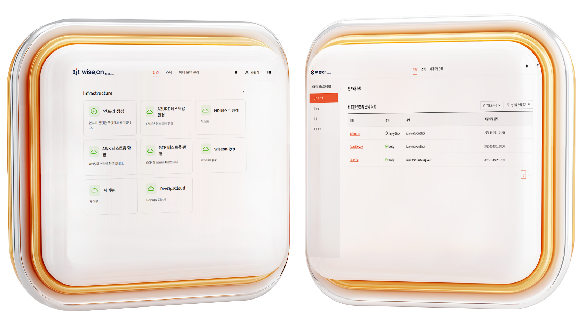

기업의 AI 도입,
높은 기술 장벽
새로운 AI 기술 이해 및 적용의 어려움, 전문 인력 부족, 도입부터 적용까지 오랜 시간 소요.
데이터 유출 및 보안 우려
데이터 외부 유출 가능성, 외부 AI 서비스 통제 부재, AI 답변 정확성 검증의 어려움.
통합 관리 및 통제 부족
인프라와 플랫폼 중복 투자, 관리 복잡성 증가, 중앙 관리 및 거버넌스 적용의 한계.
VICS Technology의 와이즈온 AI Platform가 이러한 고민을 해결합니다.
WISE.ON AI Platform 핵심 가치
AI 환경 표준화 및 단순화
LLM, RAG, Agent 등 빠르게 변화하는 AI 기술 스택을 표준화된 환경으로 제공하여 다양한 팀이 일관되게 활용하도록 지원합니다.
운영 효율성 및 비용 최적화
인프라 구성부터 애플리케이션 배포까지 자동화하여 운영 복잡성을 최소화하고, 중복 투자를 제거하여 비용을 절감합니다.
강화된 보안 및 거버넌스
중앙화된 관리 콘솔을 통해 전사 AI 운영 현황, 보안 정책, 자원 사용량을 시각화하고 체계적인 거버넌스를 수립합니다.
신속한 AI 도입 및 확장
환경 자동 제공으로 즉시 프로젝트 착수가 가능하며, 기능 내장 및 API 제공으로 빠른 실험과 확산이 가능합니다.
주요 혁신 기술
RAG (Retrieval Augmented Generation)
기업 내부 데이터를 활용해 생성형 AI의 정확성과 신뢰도를 높이고, 데이터 보안 및 최신성 문제를 해결합니다.
Agentic AI
AI 기반의 자율적이고 지능적인 프로세스 실행을 통해 업무 생산성과 운영 효율성을 극대화합니다.
Hybrid AI Model (LLM + sLLM)
대규모 언어 모델(LLM)과 소규모 특화 언어 모델(sLLM)을 결합하여 비용 효율성과 성능을 동시에 최적화합니다.
About VICS Technology
(빅스테크놀로지 소개)
빅스테크놀로지는 새로운 부가가치 창출을 위한 플랫폼과 솔루션을 제공합니다. 기술 장벽 없이, 단순하고 빠르게, 지속적이며 변화에 유연하게 대응하는 것을 목표로 합니다.
주요 연혁
- 2023년 1월: 회사 창립
- 2023년 7월: 와이즈온 AI Platform 출시
- 2024년 1월: 일본 기업에 와이즈온 AI Platform 공급
- 2024년 2월: 클라우드 인프라 자동화 기술 특허 취득
- 2024년 5월: 국내 금융사에 와이즈온 AI Platform 공급
- 2024년 10월: AI 솔루션 전략적 업무 협약: (주)카스
직원 구성
총 8명 (연구 개발 7명)
주요 고객 및 협력사
WISE.ON AI 통합 관리 Platform
WISE.ON AI Platform은 기업 AI를 안정적이고 지속 가능한 운영을
지원하는 통합 플랫폼입니다.
복잡한 AI 기술 환경을
단순화하고, 통제 가능하며, 확장 가능한 방식으로 제공합니다. "AI
핵심 기술을 환경으로 구성/제공하고 통합 관리"하는 것을 목표로
합니다.
AI 도입 기업이 직면한 도전 과제
- 기술 장벽: 새로운 AI 기술의 이해 및 적용 어려움, 전문 조직 및 인력 부족, 도입 부터 적용 까지 장시간 소요로 비즈니스 대응 민첩성 저하.
- 데이터 유출/보안 우려: 데이터의 외부 유출에 대한 우려 지속, 외부 AI 서비스에 대한 모니터링 및 통제 부재, AI 답변에 대한 정확성 검증 이슈.
- 통합 관리/통제 부족: 인프라와 AI Platform에 대한 중복, 과잉 투자, 상이한 기술과 구성으로 관리 복잡성 증가 (개별 관리, 표준화 미흡), 보안, 정책 등 중앙 관리과 거버넌스 적용 불가.
WISE.ON AI Platform이 제공하는 솔루션
- 빠르게 변화하는 AI 기술 스택(LLM, RAG, Agent 등)을 표준화된 환경으로 구성하여, 기업 내 다양한 팀이 일관된 방식으로 활용할 수 있도록 지원.
- RAG 기반의 지식베이스를 자동으로 구축하고, 문서·데이터 중심의 AI 활용을 지원.
- LLM 및 sLLM 환경을 AI Gateway를 통해 통합 관리하고, 사용량과 비용, 보안을 통제 가능한 구조로 제공.
- 애플리케이션 개발과 운영에 필요한 오픈소스 스택을 손쉽게 구성하고, GitOps 기반 배포로 개발 생산성을 높임.
- 클라우드와 온프레미스를 아우르는 인프라 환경에서 AI 서비스 구성 및 배포를 자동화하여, 운영 복잡성을 최소화.
- 전사 차원의 운영 현황과 보안 정책, 자원 사용량 등을 시각화하여, AI 운영의 거버넌스를 체계화.
Knowledge Base 환경
RAG를 위한 벡터/메타 저장소, 임베딩, 검색 API 자동 구성. 다양한 자료 형식 지원, 고성능 하이브리드 검색, 멀티 테넌트, AI 애플리케이션 구축 지원.
LLM 환경
LLM 모니터링, 보안 필터링, sLLM 서빙 및 관리 자동화. 다양한 LLM(OpenAI, Claude, Gemini 등) 및 sLLM(Llama, etc.) 지원.
AI Application 환경
AI Agent, 데이터 파이프라인, LLM 파인튜닝 개발/운영 환경 제공. DevOps 자동화, 오픈소스 스택(Jupyter, Kubeflow, Airflow 등) 관리, 관측성 확보.

Infrastructure 환경
Public/Private Cloud, On-prem 클러스터 구성 및 관리 자동화. 유연한 자원 확장, 클라우드 자동화, 다양한 인프라 지원, 모니터링.
기대 효과
Cost (비용 절감)
- 표준화된 구성으로 재사용, 중복 제거
- 핵심 컴포넌트 내장으로 시간·비용 절감
- 중앙 통제와 지원 체계로 운영 인력 효율화
Speed (속도 향상)
- 환경 자동 제공으로 즉시 프로젝트 착수 가능
- 기능 내장 + API 제공으로 빠르게 실험·확산
- 빌드/배포 자동화로 신속한 반복개발, 출시
Governance (거버넌스 강화)
- 일관된 정책 적용 (데이터, 서비스)
- 모든 환경 통합 모니터링
- 사전 차단 및 빠른 대응 (가드레일, 알람)
솔루션 및 적용 기술
와이즈온 AI Platform는 최신 AI 기술 트렌드를 반영하여 기업의 디지털 전환을 지원합니다.
생성형 AI 도입 트렌드
기업 내 생성형 AI 활용 범위가 확대되고 비즈니스 프로세스 혁신이 가속화되고 있습니다. AI 도입은 더 이상 선택이 아닌 필수이며, "언제, 어떻게 도입하느냐"가 중요합니다. 와이즈온은 이러한 트렌드에 발맞춰 기업 맞춤형 AI 솔루션을 제공합니다.
핵심 기술 상세
RAG (Retrieval Augmented Generation)
기업 데이터 보안, LLM 학습 비용, 데이터 시의성 문제를 해결하는 핵심 기술입니다. 와이즈온은 자동화된 RAG 환경 구성을 통해 기업이 자체 데이터를 안전하고 효율적으로 AI에 연동할 수 있도록 지원합니다.
Agentic AI
AI 기반의 자율적이고 지능적인 프로세스 실행을 통해 업무 생산성과 운영 효율성을 높이는 기술입니다. 와이즈온은 Agentic AI 구축을 위한 개발 및 운영 환경을 제공하여 기업이 혁신적인 AI 에이전트를 만들 수 있도록 돕습니다.
Hybrid Model (sLLM & LLM)
기업이 언어 모델 도입 시 비용 효율성과 성능을 동시에 추구할 수 있는 전략입니다. 와이즈온은 다양한 LLM과 sLLM을 통합 관리하고, 필요에 따라 최적의 모델을 선택하여 사용할 수 있는 유연한 환경을 제공합니다.
적용 사례: 영업 AI 에이전트 구축
WISE.ON AI Platform를 통해 영업 AI 에이전트를 위한 인프라(클러스터, RAG, LLM) 환경과 애플리케이션 환경(데이터 파이프라인, AI 에이전트)의 구성, 개발/운영을 자동화한 사례입니다.
- 인프라 환경 구성 및 모니터링: AWS 네트워크, 클러스터, 스토리지 등 인프라 환경과 LLM 환경(OpenAI GPT-4o), Knowledge Base 환경(영업 자료 RAG)을 구성하고 운영/관리팀이 모니터링합니다.
- 데이터 수집 파이프라인 구축: 데이터팀이 Application 환경에 구성된 오픈소스(Airflow)를 기반으로 영업 자료 수집 및 임베딩 자동화 파이프라인을 구축하여 Knowledge Base에 데이터를 적재합니다.
- 영업 에이전트 개발: AI 개발팀이 Application 환경의 GitOps를 통해 빌드/배포를 자동화하고, OpenAI LLM과 영업 자료 Knowledge Base를 기반으로 영업 에이전트를 개발합니다.
고객 사례
일본 A사: IT 솔루션 개발 전문 기업
요구사항: AI를 비롯한 자사 솔루션 및 애플리케이션의 개발/운영 인프라와 플랫폼 통합 관리, 클라우드 네이티브 환경 기반 구성 자동화, SaaS 서비스 시스템 업데이트 및 모니터링 자동화.
기대효과: 빌드 배포 자동화(CI/CD)로 개발 효율화, 인프라/플랫폼 관리 체계 표준화, 자원 통합 관리 및 모니터링, SaaS 운영 비용 절감.
국내 H 카드사: 여신 금융 기업
요구사항: AI 기반 분석 SaaS 시스템의 인프라 구성 및 관리 자동화, 기존 자동화 도구(테라폼)의 복잡성 해소, 인프라/플랫폼 통합 관리.
기대효과: SaaS 시스템 구성 및 관리 시간/노력 절감, 신속한 변경 요구 대응, 시스템 관리 체계 표준화, 인프라/플랫폼 자원 통합 관리 및 모니터링.
Contact Us (문의하기)
VICS Technology의 WISE.ON AI Platform에 대해 더 궁금한 점이
있으시거나,
데모를 요청하고 싶으시면 언제든지 문의해주세요.